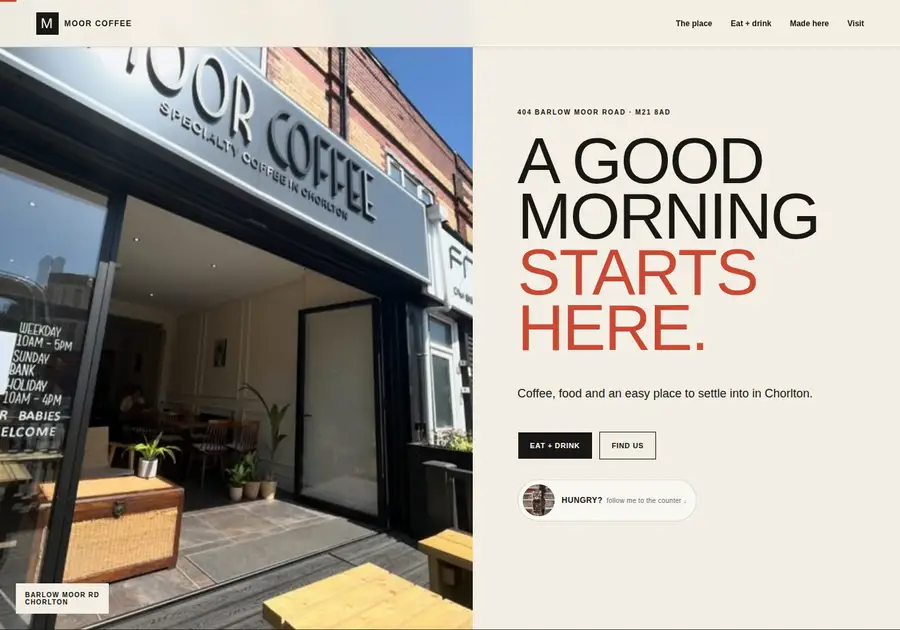
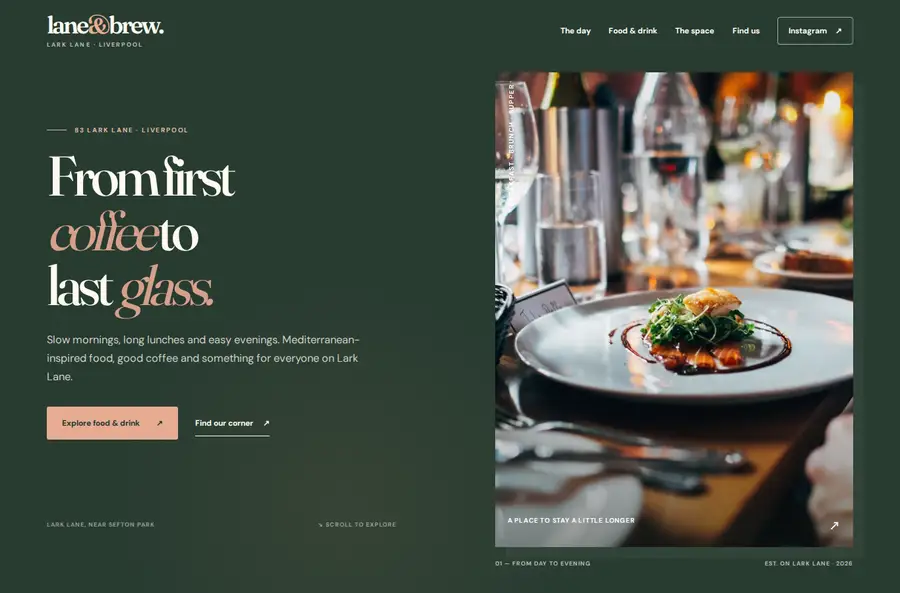

THE WORK BEHIND THE SYSTEM



Different briefs. Different visual decisions. Published builds you can inspect.
SITEPRO / ACTIVE CONCEPT
Research first. Design for the business. Verify in the browser.
The system avoids forcing one visual trend onto every project. Brand, audience, region, purpose, content and technical reality determine the direction.
RESEARCHDIRECTIONSTRUCTUREBUILDQA + SHIP
Inspect SITEPRO ↗